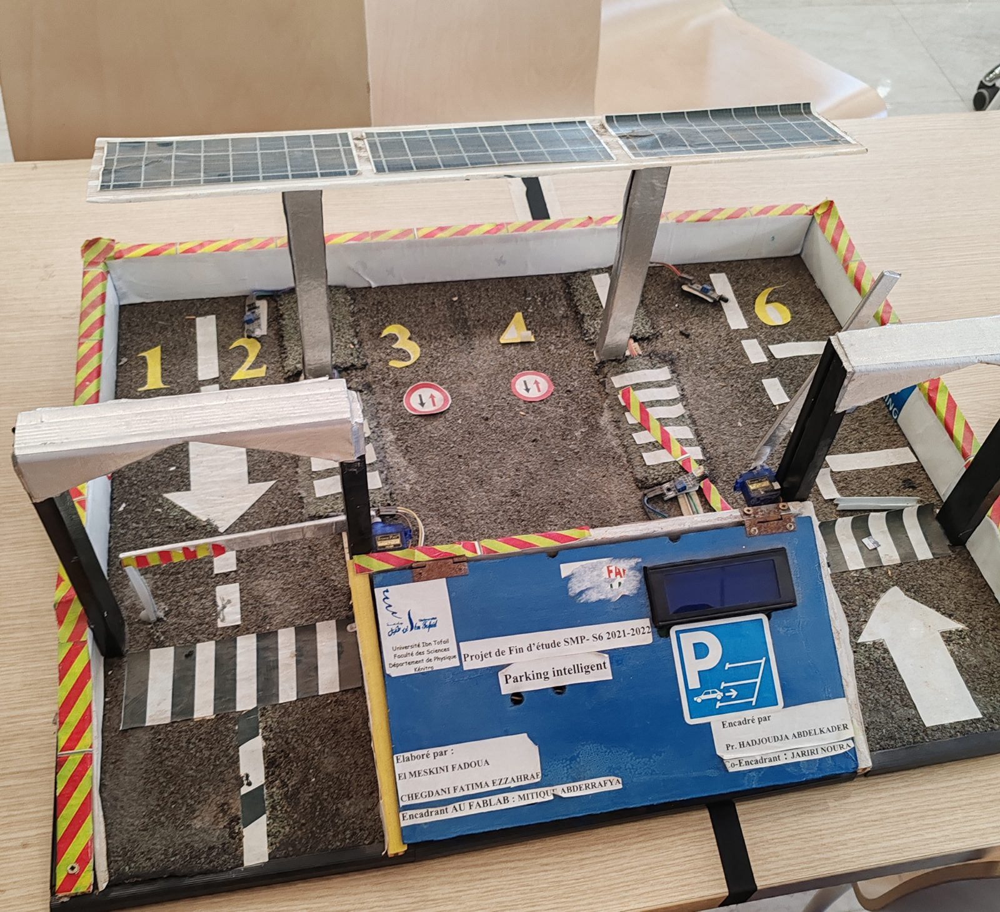

ParkSens — projet de fin d'études, parking intelligent
Le parking n'attend plus
qu'on le cherche.
Un prototype à six places, une toiture solaire, deux barrières automatisées et un cahier des charges en dix-neuf volets — pensé pour le campus de la Faculté des Sciences de Kénitra, où étudiants, enseignants et visiteurs partagent les mêmes places, et où chaque place libérée doit retrouver un usager avant même qu'il n'ait eu à la chercher.

De la maquette au cahier des charges
Une preuve de concept avant le déploiement
Six places, deux barrières pilotées par servomoteur, un écran d'affichage, des capteurs de présence et une toiture photovoltaïque : le prototype physique a permis de valider les mécanismes de base avant d'envisager une version à l'échelle du parking réel de la faculté. Le schéma ci-dessous reprend fidèlement cette disposition.
Le prototype ParkSens
Un parking se lit comme une carte
Le schéma ci-dessous reprend la maquette réelle : six places numérotées, une allée centrale balisée par des panneaux de circulation, deux barrières automatisées à servomoteur, des passages piétons et une toiture équipée de panneaux solaires. Chaque zone renvoie vers les points du cahier des charges qui s'y rattachent — touchez une zone pour les ouvrir.
Touchez une zone de la carte, ou parcourez directement la liste ci-dessous.
Les dix-neuf points
Toutes les familles de fonctionnalités
Aucun résultat pour cette recherche. Essayez un autre mot-clé.